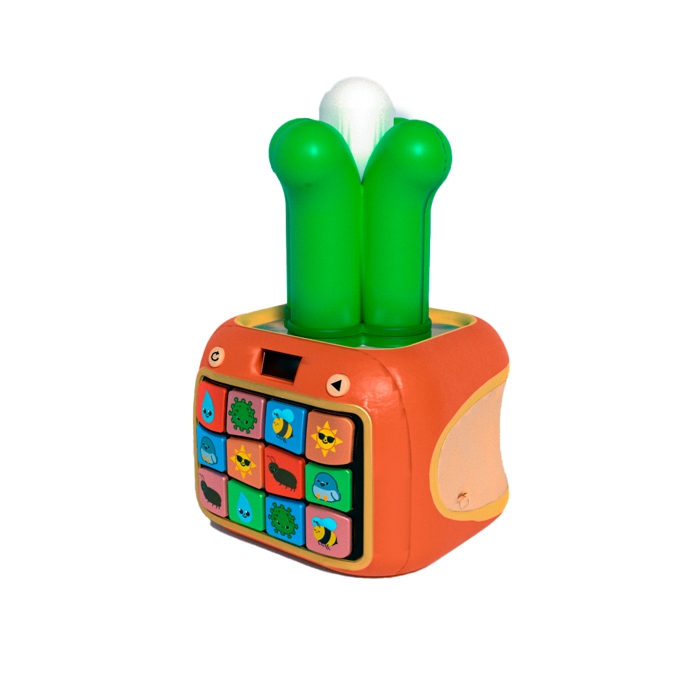

Tres experiencias únicas
Conocé las 3 versiones disponibles

Protege la cosecha
Juego de reflejos para eliminar amenazas al cultivo.
- Puntaje en pantalla
- Eliminá amenazas
- Jugá sentado o en el piso

Lumibrote
Observá crecer la planta con cada decisión correcta.
- Luces LED
- Feedback visual
- Robusto y seguro

Semilla dorada
Quiz sobre el momento ideal para plantar arroz.
- Mejor estación para sembrar
- Reacciones rápidas
- Para pequeños exploradores